<!DOCTYPE lake>
<h2 data-lake-id="OESOH" id="OESOH"><span data-lake-id="ub22e0d05" id="ub22e0d05">学习目标</span></h2><ul list="u455f85a9"><li data-lake-id="u5cb81adc" fid="u859bdd3a" id="u5cb81adc"><span data-lake-id="uae11fcfb" id="uae11fcfb">了解什么是信号线</span></li><li data-lake-id="ua7aaa0b3" fid="u859bdd3a" id="ua7aaa0b3"><span data-lake-id="ue754acf3" id="ue754acf3">了解什么是电源线</span></li><li data-lake-id="u8ec34d61" fid="u859bdd3a" id="u8ec34d61"><span data-lake-id="u08b1c7fa" id="u08b1c7fa">了解查询MCU数据手册</span></li><li data-lake-id="u427d6c9c" fid="u859bdd3a" id="u427d6c9c"><span data-lake-id="u9606231d" id="u9606231d">了解查询MCU用户手册</span></li><li data-lake-id="u3ad68f29" fid="u859bdd3a" id="u3ad68f29"><span data-lake-id="u40908355" id="u40908355">理解 什么是 LDO</span></li><li data-lake-id="u0c91891c" fid="u859bdd3a" id="u0c91891c"><span data-lake-id="u4bc6c209" id="u4bc6c209">理解 什么是 DCDC</span></li><li data-lake-id="u6c745f66" fid="u859bdd3a" id="u6c745f66"><span data-lake-id="u2a226658" id="u2a226658">理解 晶振电路 设计</span></li></ul><p data-lake-id="ua37c2a45" id="ua37c2a45"><span data-lake-id="u04399648" id="u04399648">​</span><br/></p><a class="yuque-card-link" href="https://www.yuque.com/attachments/yuque/0/2025/zip/27903758/1767097456196-b6e7a274-6a04-4c07-90a2-70f4f68e0cd7.zip">localdoc：参考原理图和BOM清单.zip</a><h2 data-lake-id="gs12B" id="gs12B"><span data-lake-id="uec4f27d9" id="uec4f27d9">原理图</span></h2><p data-lake-id="u7a0eb931" id="u7a0eb931">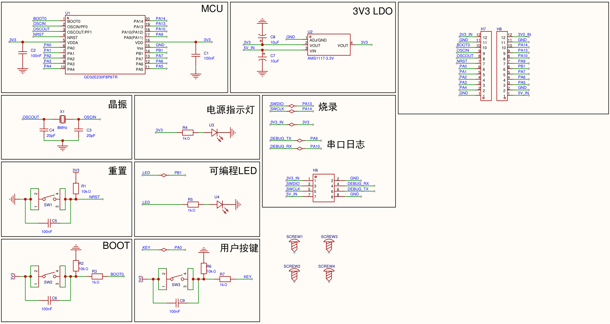</p><h2 data-lake-id="JoKh7" id="JoKh7"><span data-lake-id="udf149130" id="udf149130">PCB Layout</span></h2><p data-lake-id="udb7692d9" id="udb7692d9">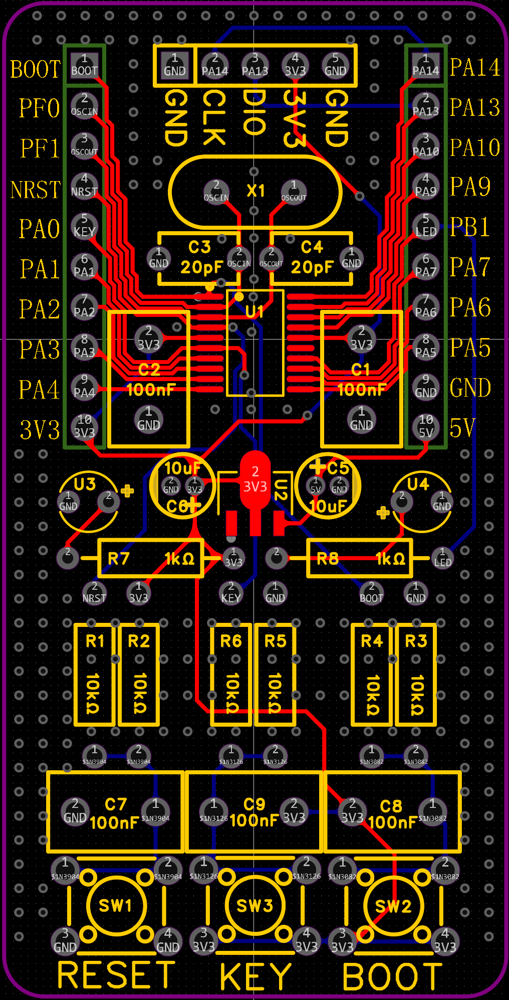</p><h2 data-lake-id="gAM4F" id="gAM4F"><span data-lake-id="uff2d2225" id="uff2d2225">3D渲染效果</span></h2><p data-lake-id="ud2ccc4b3" id="ud2ccc4b3">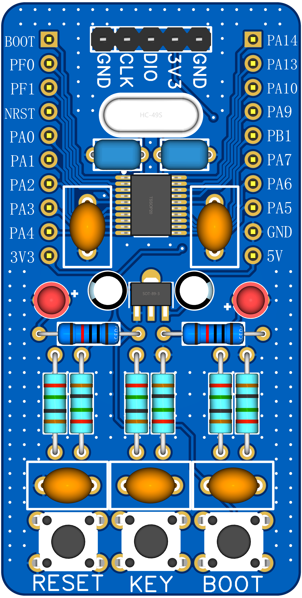</p><h2 data-lake-id="zuccX" id="zuccX"><span data-lake-id="ua1a7cff0" id="ua1a7cff0">学习内容</span></h2><h3 data-lake-id="SpP4h" id="SpP4h"><span data-lake-id="u7bdbf9cd" id="u7bdbf9cd">MCU</span></h3><p data-lake-id="ud9dbd81d" id="ud9dbd81d">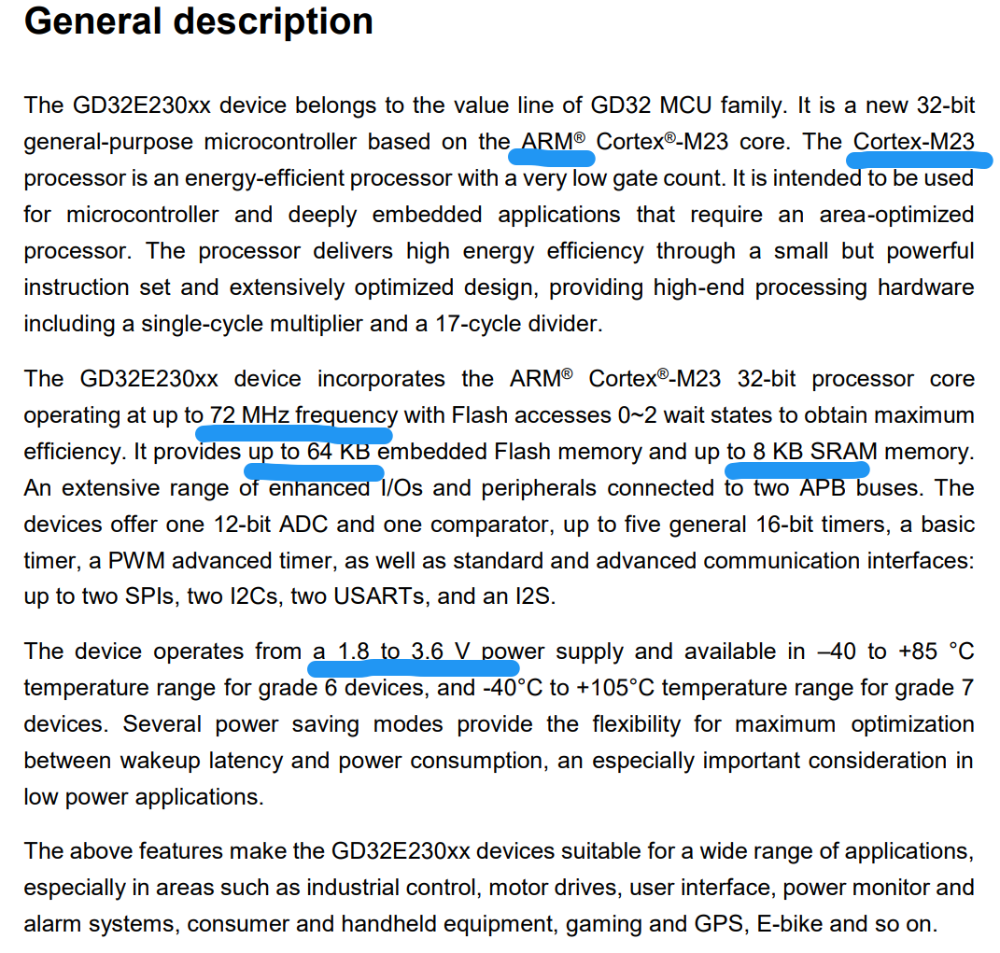</p><h4 data-lake-id="mfHCf" data-lake-index-type="2" id="mfHCf"><span data-lake-id="ub9ba059e" id="ub9ba059e">主频</span></h4><p data-lake-id="ud6d395f1" id="ud6d395f1"><span data-lake-id="ud78ae505" id="ud78ae505">72MHZ</span></p><h4 data-lake-id="sLnKv" data-lake-index-type="2" id="sLnKv"><span data-lake-id="udd21a493" id="udd21a493">存储Flash和运行内存SRAM</span></h4><p data-lake-id="u2bd5ef3c" id="u2bd5ef3c"><span data-lake-id="u64f56dc6" id="u64f56dc6">Flash最大64KB，实际根据具体型号情况不同而不同。</span></p><p data-lake-id="ubbb9b425" id="ubbb9b425"><span data-lake-id="uc6748f28" id="uc6748f28">SRAM最大8KB，实际根据具体型号情况不同而不同。</span></p><p data-lake-id="u359256db" id="u359256db">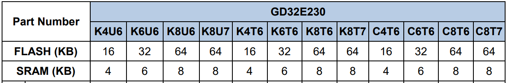</p><p data-lake-id="u633968ca" id="u633968ca">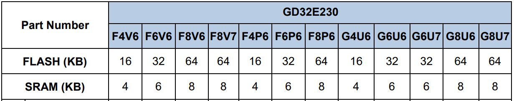</p><p data-lake-id="u038097fb" id="u038097fb">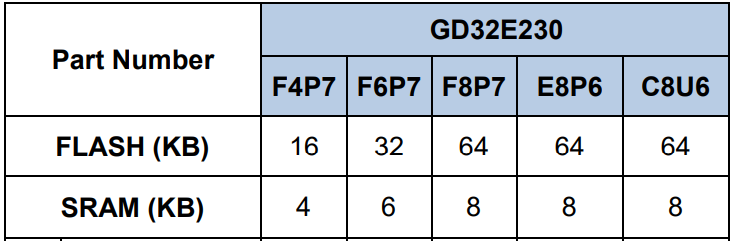</p><p data-lake-id="ue32a425b" id="ue32a425b"><br/></p><h4 data-lake-id="o6IQW" data-lake-index-type="2" id="o6IQW"><span data-lake-id="ua294fe5e" id="ua294fe5e">外设接口</span></h4><p data-lake-id="uce6a368a" id="uce6a368a"><span data-lake-id="uc05609fb" id="uc05609fb">The devices offer one 12-bit ADC and one comparator, up to five general 16-bit timers, a basic timer, a PWM advanced timer, as well as standard and advanced communication interfaces: up to two SPIs, two I2Cs, two USARTs, and an I2S.  </span></p><p data-lake-id="u0b8a553c" id="u0b8a553c"><span data-lake-id="udfe3c90f" id="udfe3c90f">外设接口的数量也是根据芯片的型号不同而不同</span></p><p data-lake-id="u22b0241d" id="u22b0241d">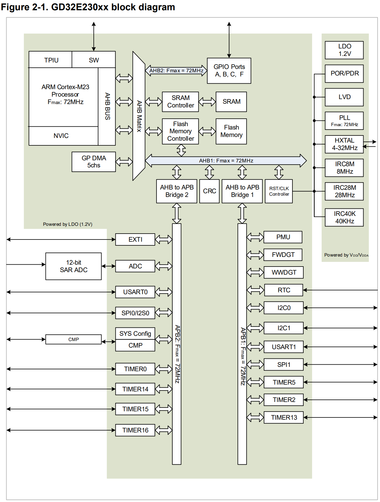</p><h4 data-lake-id="J9IpC" data-lake-index-type="2" id="J9IpC"><span data-lake-id="uf09e33c8" id="uf09e33c8">时钟树</span></h4><p data-lake-id="ua2487d01" id="ua2487d01">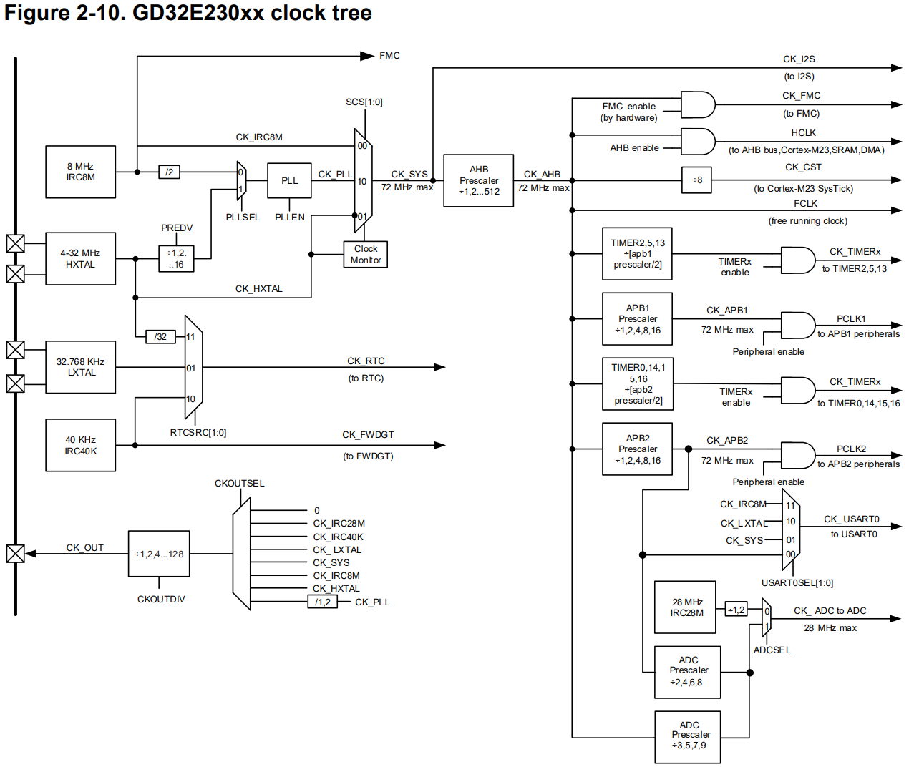</p><p data-lake-id="uaa797b58" id="uaa797b58"><br/></p><h3 data-lake-id="DLvoK" id="DLvoK"><span data-lake-id="uea390ad3" id="uea390ad3">MCU外围电路</span></h3><h4 data-lake-id="tiIhH" id="tiIhH"><span data-lake-id="u048a330c" id="u048a330c">电源部分</span></h4><p data-lake-id="uc41829da" id="uc41829da"><span data-lake-id="ua69337f2" id="ua69337f2">MCU的供电需要严格按照数据手册说明而来。（1.8V-3.6V）</span></p><p data-lake-id="u91fe51fe" id="u91fe51fe">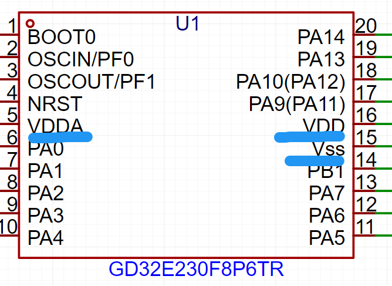</p><p data-lake-id="u7857bfb3" id="u7857bfb3"><span data-lake-id="u10c0d97e" id="u10c0d97e">VDD、VDDA、VSS</span></p><p data-lake-id="u17b85eb3" id="u17b85eb3"><span data-lake-id="u1f5b663c" id="u1f5b663c">​</span><br/></p><p data-lake-id="u299f82ff" id="u299f82ff"><span data-lake-id="u72aaa474" id="u72aaa474">​</span><br/></p><h4 data-lake-id="M7EMW" id="M7EMW"><span data-lake-id="ube3514d7" id="ube3514d7">晶振部分</span></h4><p data-lake-id="u056040e6" id="u056040e6"><span data-lake-id="u5a47ea67" id="u5a47ea67">晶振的作用，是为了让芯片按照规定震动。通常如果芯片内部包含晶振，可以不接外部晶振。</span></p><p data-lake-id="ufd3b4f8b" id="ufd3b4f8b"><span data-lake-id="u8daa9f4c" id="u8daa9f4c">接外部晶振，要考虑晶振的主频，和晶振对应的电容大小。</span></p><p data-lake-id="u617945e9" id="u617945e9">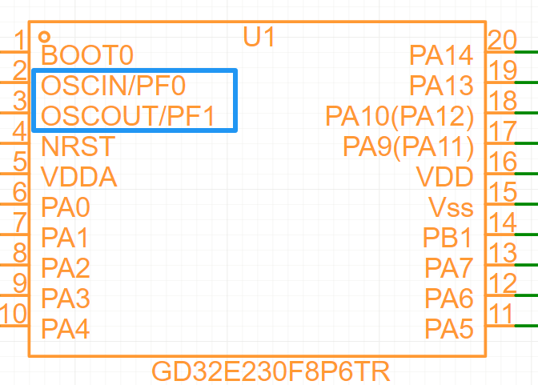</p><h4 data-lake-id="fQyIq" id="fQyIq"><span data-lake-id="u6125bac7" id="u6125bac7">​</span><br/></h4><h3 data-lake-id="Wcuul" id="Wcuul"><span data-lake-id="ud900dc02" id="ud900dc02">电源设计</span></h3><h4 data-lake-id="q55Lg" id="q55Lg"><span data-lake-id="u1fc87dca" id="u1fc87dca">LDO</span></h4><p data-lake-id="u09a23bdb" id="u09a23bdb"><span data-lake-id="u361ebb42" id="u361ebb42">LDO的全称是Low Dropout Regulator，中文是低压差线性稳压器。</span></p><p data-lake-id="u80af867a" id="u80af867a"><span data-lake-id="u02a17bf7" id="u02a17bf7">它是一种线性稳压器，主要功能是将一个较高且可能不稳定的输入电压（Vin），转换成一个较低且非常稳定的输出电压（Vout）。</span></p><ol list="u85cd8850"><li data-lake-id="u962857a3" fid="u9526c415" id="u962857a3"><span data-lake-id="ua16f6234" id="ua16f6234">原理</span></li></ol><p data-lake-id="u3821feef" id="u3821feef"><span data-lake-id="u5888780e" id="u5888780e">简单理解，可以认为是通过串联分压原理，消耗掉多余电压</span></p><ol list="u85cd8850" start="2"><li data-lake-id="u576d1767" fid="u9526c415" id="u576d1767"><span data-lake-id="u69e09151" id="u69e09151">优点</span></li></ol><p data-lake-id="ub4ba71f8" id="ub4ba71f8"><span data-lake-id="u84737458" id="u84737458">输出稳定</span></p><ol list="u85cd8850" start="3"><li data-lake-id="u66bb153c" fid="u9526c415" id="u66bb153c"><span data-lake-id="u61f2e17a" id="u61f2e17a">缺点</span></li></ol><p data-lake-id="u03bc95fe" id="u03bc95fe"><span data-lake-id="u2338f495" id="u2338f495">功耗高，压降越大发热越严重。</span></p><h4 data-lake-id="dP1vg" id="dP1vg"><span data-lake-id="u99af5d87" id="u99af5d87">DCDC</span></h4><ol list="u86699c94"><li data-lake-id="ub571ac4b" fid="u9526c415" id="ub571ac4b"><span data-lake-id="uf032e352" id="uf032e352">原理</span></li></ol><p data-lake-id="ucd6b4926" id="ucd6b4926"><span data-lake-id="u81820681" id="u81820681">简单理解，通过PWM控制电压输出</span></p><ol list="u86699c94" start="2"><li data-lake-id="ua21052fe" fid="u9526c415" id="ua21052fe"><span data-lake-id="uf5088a45" id="uf5088a45">优点</span></li></ol><p data-lake-id="ufa175928" id="ufa175928"><span data-lake-id="u77739643" id="u77739643">功率转换高</span></p><ol list="u86699c94" start="3"><li data-lake-id="u08976e4c" fid="u9526c415" id="u08976e4c"><span data-lake-id="u2b2688e7" id="u2b2688e7">缺点</span></li></ol><p data-lake-id="u422147bc" id="u422147bc"><span data-lake-id="u80a52e14" id="u80a52e14">输出电压稳定性没有LDO好</span></p>